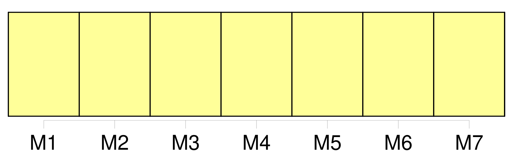
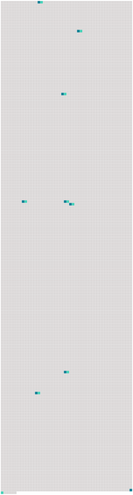

Longueur nb maillons : 9 mentions |
 |
Le consentement mutuel et persévérant des époux, exprimé de la manière prescrite par [la loi] , sous les conditions et après les épreuves qu'elle détermine prouvera suffisamment que la vie commune leur est insupportable et qu'il existe, par rapport à eux une cause péremptoire de divorce. [21 phrases]
Le demandeur, en vertu de la permission du tribunal, fera citer le défendeur, dans la forme ordinaire, comparaître en personne à l'audience à huis clos dans le délai de [la loi] ; il fera donner copie, en tête de la citation, de la demande en divorce et des pièces produites à l'appui. [47 phrases]
Après une année d'épreuve, si les parties ne se sont pas réunies, l'époux demandeur pourra faire citer l'autre époux à comparaître au tribunal, dans les délais de [la loi] , pour y entendre prononcer le jugement définitif, qui pour lors admettra le divorce. [75 phrases]
Si le commissaire du Gouvernement trouve dans les pièces la preuve que les deux époux étaient âgés, le mari de vingt-cinq ans, la femme de vingt-un ans, lorsqu'ils ont fait leur première déclaration ; qu'à cette époque ils étaient mariés depuis deux ans, que le mariage ne remontait pas à plus de vingt, que la femme avait moins de quarante-cinq ans, que le consentement mutuel a été exprimé quatre fois dans le cours de l'année, après les préalables ci-dessus prescrits et avec toutes les formalités requises par le présent chapitre, notamment avec l'autorisation des pères et mères des époux, ou avec celle de leurs autres ascendans vivans en cas de prédécès des pères et mères, il donnera ses conclusions en ces termes, [La loi] permet ; dans le cas contraire, ses conclusions seront en ces termes, [La loi] empêche. [2 phrases]
S'il en résulte que, dans l'opinion du tribunal, les parties ont satisfait aux conditions et rempli les formalités déterminées par [la loi] , il admettra le divorce, et renverra les parties devant l'officier de l'état civil, pour le faire prononcer dans le cas contraire, le tribunal déclarera qu'il n'y a pas lieu à admettre le divorce, et déduira les motifs de la décision. [160 phrases]
L'obligation naturelle, qui continuera d'exister entre l'adopté et ses père et mère, de se fournir des alimens dans les cas déterminés par [la loi] , sera considérée comme commune à l'adoptant et à l'adopté, l'un envers l'autre. [15 phrases] ° si toutes les conditions de [la loi] sont remplies ; 2. [97 phrases]
Il est comptable, quant à la propriété et aux revenus, des biens dont il n'a pas la jouissance ; et, quant à la propriété seulement, de ceux des biens dont [la loi] lui donne l'usufruit. |
 |
Il est possible de télécharger la ressource sur la page Ortolang |
Si vous avez des questions ou vous voyez des erreurs, merci d'envoyer un mail à silvia.federzoni89@gmail.com |